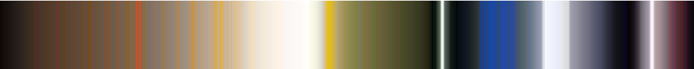

Computational pattern recognition has made ground-breaking progress in recent years by combining advanced methods of machine learning with ever increasing amounts of visual data. Algorithms that learn to learn, combined with massive parallel computation in so-called GPU clusters, and billions of images a day acquired via sensors, or uploaded by Web users, have led to a situation where computers are able to recognize faces, spot cats in any body-configuration, and even drive cars without human interaction. In Art History such advanced methods of pattern recognition increasingly aim to compete with human connoisseurship. Relevant studies, for example, successfully identify duplicate photos in image archives (Resig, 2013), quickly find artworks given a certain object ( Crowley and Zisserman, 2014), quantify the innovativeness of paintings ( Elgammal and Saleh, 2015), convincingly discern and date architectural styles at a mega-city scale ( Lee et al., 2015), and track the evolution of color contrast in Western Art from chiaroscuro to landscape painting (Kim et al., 2014 and Lee et al., 2017). What is missing is a rigorous reconciliation between state-of-the-art computer science techniques and established art historical standards based on trained observation and hermeneutic interpretation. Such a reconciliation is hard due to both the so-called “curse of dimensionality” in machine learning, and the cognitive limit of individual researchers confronted with potentially millions of images.
Our project aims to work towards a reconciliation of the computational and hermeneutic perspectives via two pathways. First, through visualizing the chromatic structure of paintings up to entire collections by consistently sorting color pixels, we uncover hidden color patterns of individual paintings, artist oeuvres, periods, and museum collections. Here, we also deal with a well-known multidimensional phenomenon, i.e. color, which could be a starting point to deal with hidden dimensions in machine learning using a traditional hermeneutic approach. Second, using cutting-edge deep learning algorithms and dimension reduction techniques that reduce the high dimensions of the machine learning results to a human-digestible level, we calculate visual family resemblance, generate a variety of clustering possibilities, and produce different visualizations. Combining both pathways, while performing these analyses on three different art collections, we will be able to evaluate the machine learning results, from both an art historian's and a computer scientist's perspective, in a manner that is understandable by a broad audience.
We work with three datasets: the Dallas Museum of Art, a “universal” art collection, circa 18,000 artworks; the Barrett collection, a comprehensive private collection of Swiss art, circa 400 paintings; and WikiArt, an encyclopedic online collection of circa 75,000 paintings. The DMA data is particularly strong in its six-thousand-year coverage, well in line with the exponential growth of world population and cultural production. The Swiss art collection, including high resolution images taken under controlled lighting conditions, is strong in its topical coherence. The WikiArt dataset, though subjects to shortcomings in lighting conditions and temporal coverage, is widely used as a de facto benchmark among machine learning community, and is therefore used for comparative analysis with the other collections.
|
( A) Color palette of Claude Monet at DMA

( B) Color palette of Piet Mondrian at DMA ( C) Color palette of Georgia O’Keefe at DMA ( D) Color palette of Mark Rothko at DMA ( E) Color palette of Gerhard Richter at DMA |
|
Fig. 1. Colors in the oeuvre of individual artists. Colors are consistently sorted by luminosity, indicating color frequency (number of pixels), equivalent to area coverage. The strips for ( A) Monet, ( B) Mondrian, ( C) O’Keefe, ( D) Rothko, and ( E) Richter reveal striking individual differences between artists. Similar sense-making comparison can be used to differentiate collection coverage as well as canonicity of artists, departments, and other sub-selections of works across museums. |